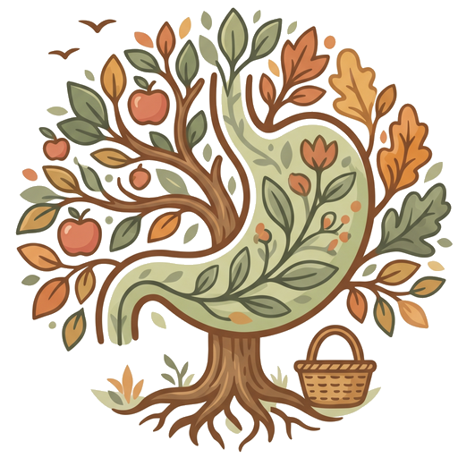
Votre guide nutritionnel personnalisé au rythme des saisons. Une approche bienveillante et clinique, couplée à un moteur de recettes mondial, pour apaiser votre digestion au quotidien.
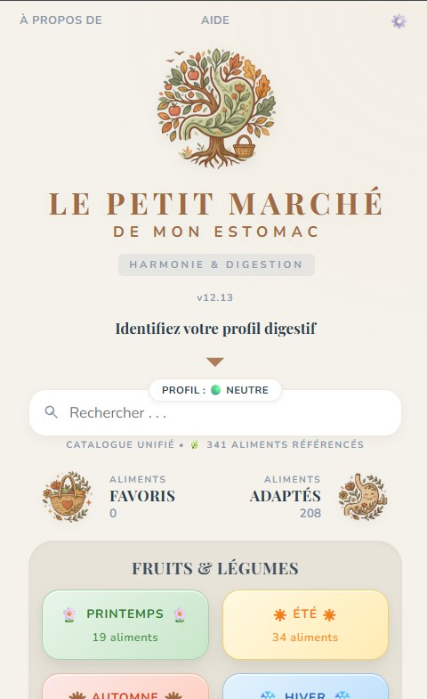
Recherche ultra-rapide et catalogue complet de saisons.
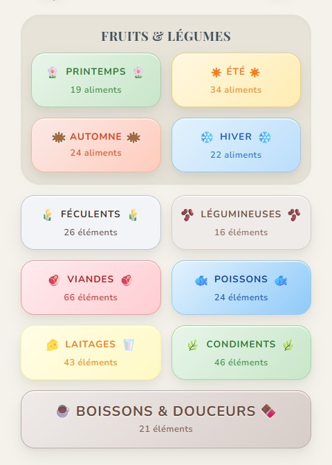
Féculents, viandes, légumes... tout est classé.
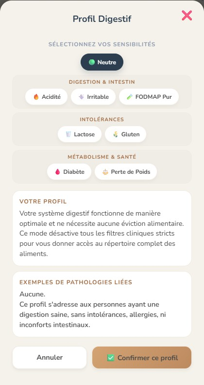
Choisissez vos sensibilités (Lactose, Côlon, RGO...).
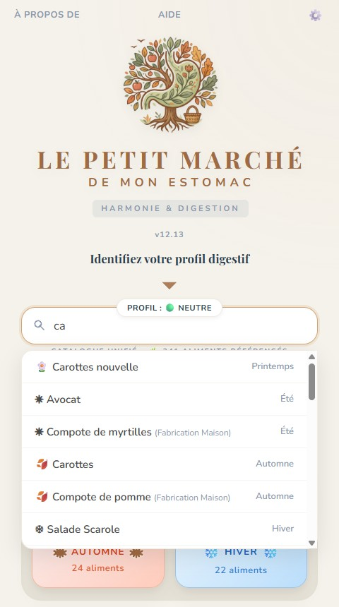
Trouvez instantanément n'importe quel aliment.
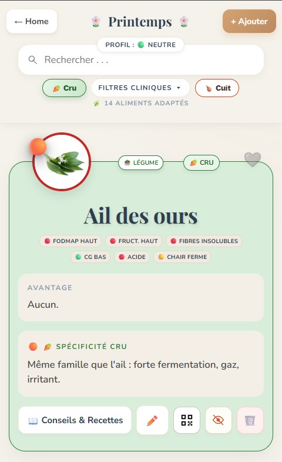
L'application ne montre que ce qui vous correspond.
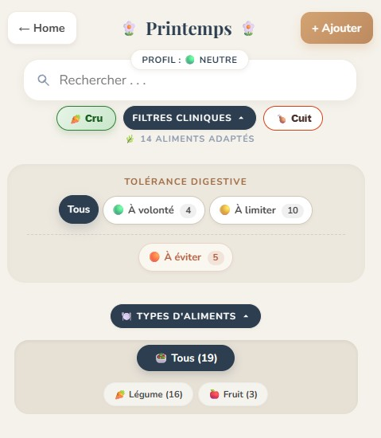
Recalcule la digestion selon le mode de cuisson.
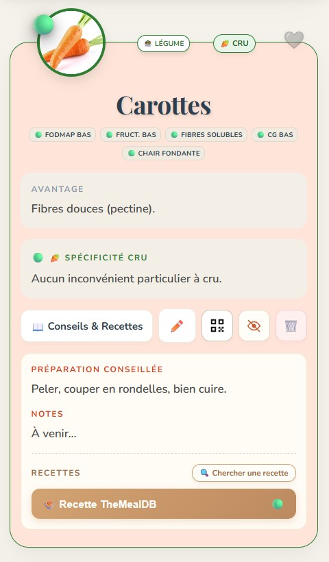
Analyse complète des FODMAPs, fibres et glycémie.
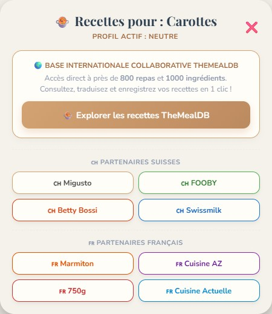
Des centaines de plats et 8 partenaires officiels.
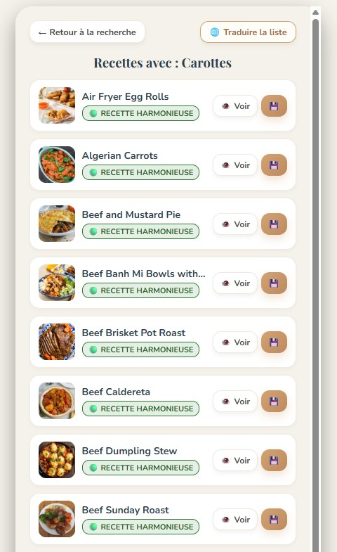
Liste TheMealDB en 1 clic.
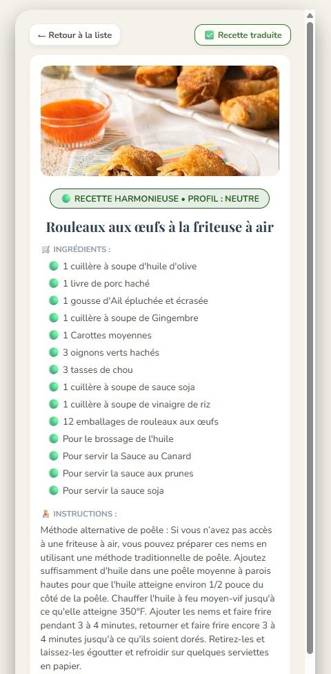
Étapes, ingrédients et diagnostic de la recette.
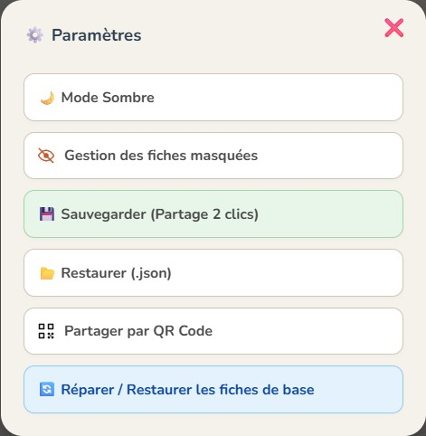
Mode sombre, sauvegarde et restauration locale.
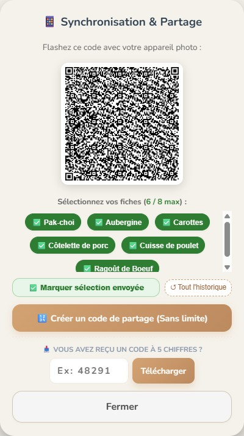
Partagez instantanément vos fiches et recettes.
7 profils à combiner : Croisez vos besoins (Acidité, Irritable, FODMAP Pur, Sans Lactose, Sans Gluten, Diabète, Perte de Poids). L'application masque ou signale instantanément les aliments incompatibles.
La cuisson transforme la chimie des aliments ! Un simple clic sur le bouton "Cuit" recalcule instantanément la tolérance digestive de l'aliment.
L'application interroge simultanément des bases mondiales pour vous proposer des milliers de recettes traduites en 1 clic. Retrouvez aussi des raccourcis vers Migusto, Fooby, Marmiton...
Partagez vos fiches et recettes entre appareils en 2 secondes : soit via un QR Code instantané, soit via notre Casier Cloud Sécurisé (Code PIN à 5 chiffres).
Un mode sombre unique aux tons "Sable et Biscuit", conçu pour reposer vos yeux le soir tout en conservant l'élégance et la lisibilité parfaite des recettes.
Gérez vos Favoris ❤️, masquez les fiches inutiles 👁️, ajoutez vos propres notes et sauvegardez le diagnostic clinique de vos plats.
Besoin de comprendre le système des pastilles de tolérance (🟢 🟡 🟠) ou le fonctionnement d'une pathologie ? Un manuel d'aide très détaillé est accessible à tout moment dans l'application.
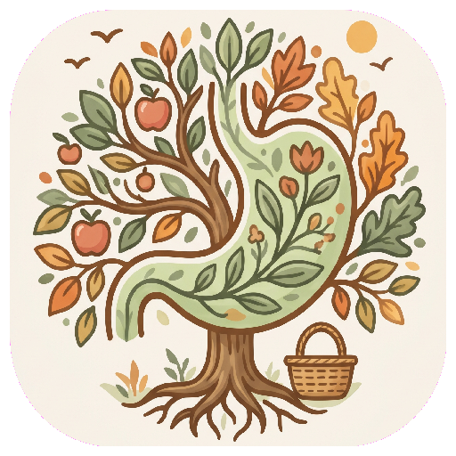
Fermez votre navigateur et lancez l'application directement depuis la nouvelle icône présente sur votre téléphone.